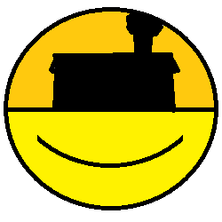

Hello, and welcome to the SMILE HOUSE literature club!
We read books every month. Won't you come and join us?

We have a bridged Discord, Matrix, and Telegram chat! Use your favorite of the bunch and hop in! If you don't know what that means, we recommend following the Discord link. If you have any questions and are unable to join the chat to ask them, shoot me an email and I'll get you set up.
February 2020
The Stranger (L'Étranger). 1942, Albert Camus.
Hard-Boiled Wonderland and the End of the World (世界の終りとハードボイルド・ワンダーランド). 1985, Haruki Murakami.